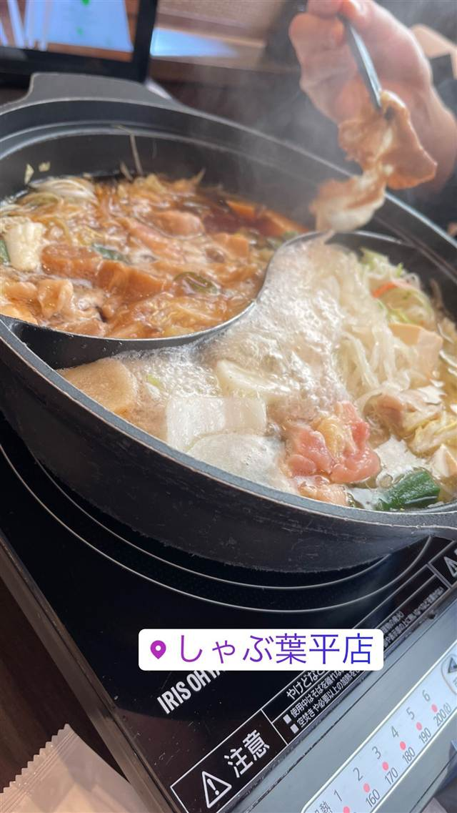

しゃぶ葉 川崎平店
野菜も寿司もデザートも揃うしゃぶしゃぶ食べ放題
しゃぶ葉平店
「しゃぶ葉」は2007年に横浜ワールドポーターズで1号店を開いたしゃぶしゃぶ食べ放題チェーン。2019年からすかいらーくグループの運営となり、野菜・肉・寿司・デザートまで揃う食べ放題スタイルで全国300店舗超に展開している。
TRIVIA
へえ、という話
- 1号店は元々ニラックス社の運営で、2019年にすかいらーくグループへ運営が移った
- 2021年には米国1号店がシカゴにオープンした
| 創業 | 2007年、横浜ワールドポーターズに1号店オープン（当初はニラックス運営）。2019年1月にすかいらーくの運営ブランドとなる。 |
|---|---|
| 看板 | しゃぶしゃぶ食べ放題 |
| こだわり | 野菜食べ放題に加え、4種類から選べるスープ、季節のブランド肉、寿司・デザートの食べ放題も併設している。 |
| 予算 | 昼 ¥1,000～¥1,999 夜 ¥1,000～¥1,999 |
| 場所 | 宮崎台駅／鷺沼駅 神奈川県川崎市宮前区平1-1-2 |
| 注意 | すかいらーくグループの一員として全国に300店舗超、海外（米国シカゴなど）にも展開。 |
食べたもの：しゃぶしゃぶ
NEARBY
近い店・同じ系統の店
-
 家系 宮崎台駅／鷺沼駅
ラーメン大桜 川崎平店
麺の固さや脂の量を選べる家系ラーメンと人気のざく丼
昼 ¥1,000～¥1,999 夜 ¥1,000～¥1,999
家系 宮崎台駅／鷺沼駅
ラーメン大桜 川崎平店
麺の固さや脂の量を選べる家系ラーメンと人気のざく丼
昼 ¥1,000～¥1,999 夜 ¥1,000～¥1,999
-
 しゃぶしゃぶ・すき焼き 県庁前駅
すき焼き 松山 燦 別館
発酵熟成の技術で仕上げるあぐー豚しゃぶしゃぶとA4黒毛和牛すき焼き
昼 ¥2,000～¥2,999 夜 ¥8,000～¥9,999
しゃぶしゃぶ・すき焼き 県庁前駅
すき焼き 松山 燦 別館
発酵熟成の技術で仕上げるあぐー豚しゃぶしゃぶとA4黒毛和牛すき焼き
昼 ¥2,000～¥2,999 夜 ¥8,000～¥9,999
-
 しゃぶしゃぶ・すき焼き ゆいレール旭橋駅 徒歩5分
あぐーおじいの店
金アグー豚だけで出汁を育てる独自のしゃぶしゃぶ
夜 ¥6,000～¥7,999
しゃぶしゃぶ・すき焼き ゆいレール旭橋駅 徒歩5分
あぐーおじいの店
金アグー豚だけで出汁を育てる独自のしゃぶしゃぶ
夜 ¥6,000～¥7,999
-
 しゃぶしゃぶ・すき焼き 県庁前駅
アグーしゃぶしゃぶ みるく 那覇店
黄金だしと溶き卵・黒胡椒で食べるアグーしゃぶしゃぶ
夜 ¥6,000～¥7,999
しゃぶしゃぶ・すき焼き 県庁前駅
アグーしゃぶしゃぶ みるく 那覇店
黄金だしと溶き卵・黒胡椒で食べるアグーしゃぶしゃぶ
夜 ¥6,000～¥7,999
-
 しゃぶしゃぶ・すき焼き 三田
三田ばさら 本店
砂糖を使わずトマトの酸味で仕立てるすき焼き
夜 ¥10,000～¥14,999
しゃぶしゃぶ・すき焼き 三田
三田ばさら 本店
砂糖を使わずトマトの酸味で仕立てるすき焼き
夜 ¥10,000～¥14,999
-
 しゃぶしゃぶ・すき焼き 三田駅
ひつじがとう（会員制/紹介制 羊肉専門店）
完全紹介制、ラム一頭買いの炭火焼きと羊すき鍋
夜 ¥10,000～¥14,999
しゃぶしゃぶ・すき焼き 三田駅
ひつじがとう（会員制/紹介制 羊肉専門店）
完全紹介制、ラム一頭買いの炭火焼きと羊すき鍋
夜 ¥10,000～¥14,999